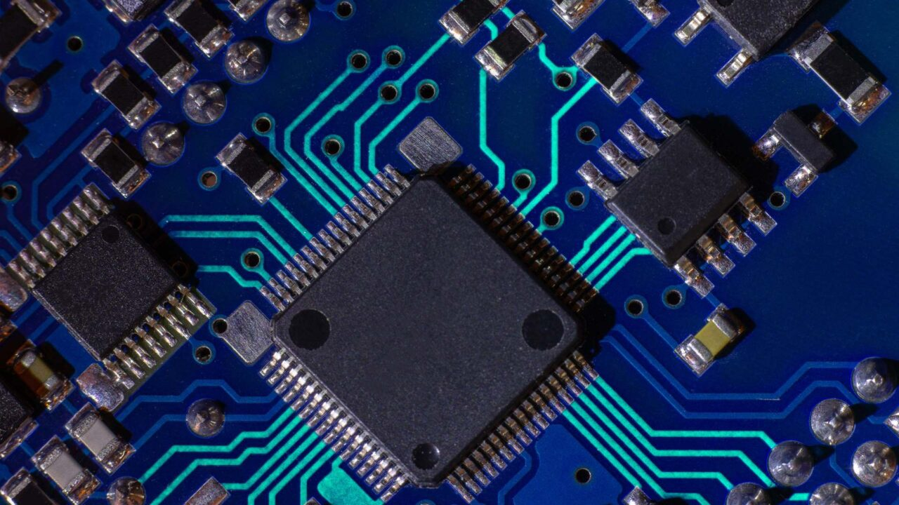
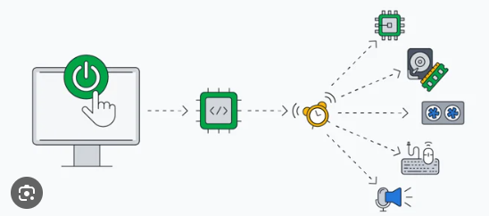

Un firmware se define como un tipo de software embebido en la memoria de lectura de un dispositivo que se encarga de proporcionar las instrucciones sobre el comportamiento del dispositivo y suele activar las funciones básicas del mismo.
El firmware es un bloque de instrucciones de programa para propósitos específicos, grabado en una memoria de tipo no volátil (ROM, EEPROM, flash, etc), que establece la lógica de más bajo nivel que controla los circuitos electrónicos de un dispositivo de cualquier tipo. Al estar integrado en la electrónica del dispositivo es en parte hardware, pero también es software, ya que proporciona lógica y se dispone en algún tipo de lenguaje de programación. Funcionalmente, el firmware es el intermediario (interfaz) entre las órdenes externas que recibe el dispositivo y su electrónica.
 